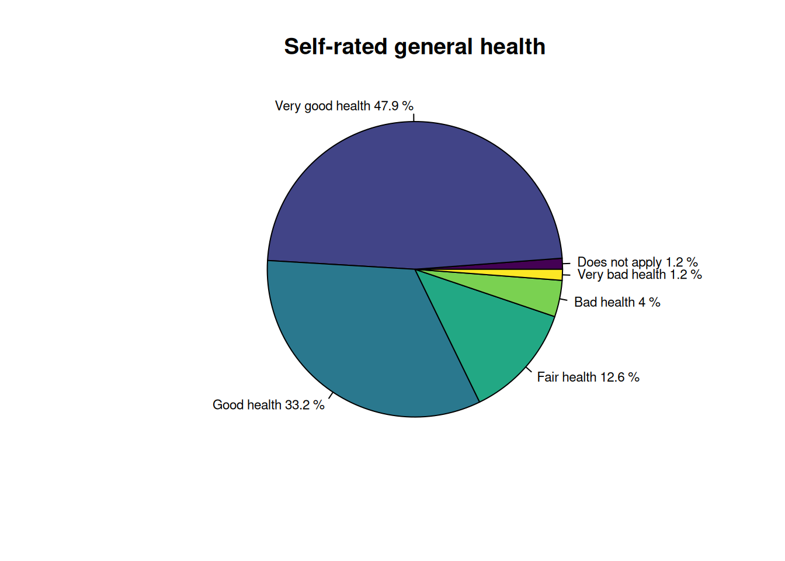
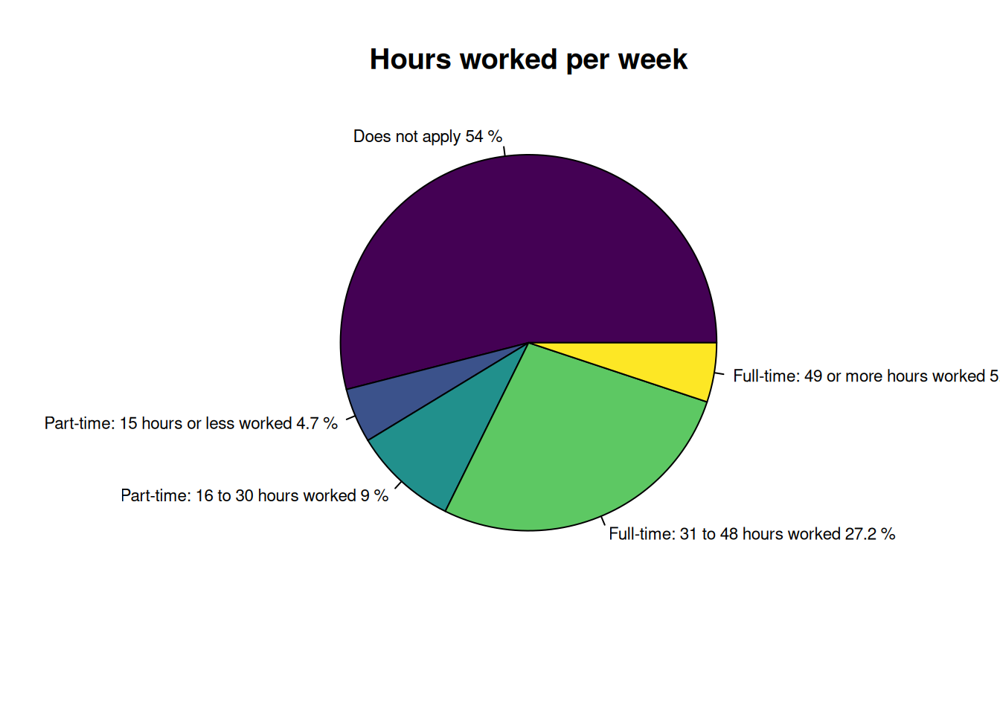

#### Load the packages if installed; install them if not present
pkg <- c("tidyverse",
"ggplot2",
"ggrepel",
"patchwork",
"gridExtra",
"haven", ### Import Stata and SPSS datasets
"viridis" ### colourblind friendly palette
)
for (p in pkg) {
if (!require(p, character.only = T)) {
install.packages(p)
library(p, character.only = T)
}
}R code for module activity
1- Install and load the main packages
2- Load the dataset and make a copy
Important: Remember to change the filepath to your dataset accordingly.
If the read_sav code does not work, you can use the Import Dataset button in the RStudio Environment Pane to load the dataset in R.
3- Drop unnecessary variables
NoteClick to view results
# A tibble: 6 × 6
health_in_general hours_per_week_worked resident_age_7d sex
<dbl+lbl> <dbl+lbl> <dbl+lbl> <dbl+l>
1 1 [Very good health] 4 [Full-time: 49 or more hours … 4 [Aged 35 to … 2 [Mal…
2 2 [Good health] -8 [Does not apply] 7 [Aged 65 yea… 2 [Mal…
3 2 [Good health] -8 [Does not apply] 7 [Aged 65 yea… 2 [Mal…
4 3 [Fair health] -8 [Does not apply] 7 [Aged 65 yea… 1 [Fem…
5 2 [Good health] -8 [Does not apply] 2 [Aged 16 to … 2 [Mal…
6 4 [Bad health] -8 [Does not apply] 7 [Aged 65 yea… 2 [Mal…
# ℹ 2 more variables: ethnic_group_tb_6a <dbl+lbl>,
# approx_social_grade <dbl+lbl>[1] 604351 64- Exploratory analysis
4.1- Univariate analysis
4.1.1 Univariate analysis for health in general and hours worked
Frequencies for health in general and hours worked
NoteClick to view results
-8 1 2 3 4 5
6989 289229 200500 76185 24306 7142
Does not apply Part-time: 15 hours or less worked
326132 28680
Part-time: 16 to 30 hours worked Full-time: 31 to 48 hours worked
54414 164603
Full-time: 49 or more hours worked
30522 Distribution of self-rated health and hours worked
NoteClick to view results
Does not apply Very good health Good health Fair health
1.2 47.9 33.2 12.6
Bad health Very bad health
4.0 1.2
Does not apply Part-time: 15 hours or less worked
54.0 4.7
Part-time: 16 to 30 hours worked Full-time: 31 to 48 hours worked
9.0 27.2
Full-time: 49 or more hours worked
5.1 Frequencies and percentages with labels for health in general and hours worked
You can also generate pie charts for better visualization
a) Pie chart for self-rated general health
h1<-round(100*
prop.table(
table(
as_factor(census2021teaching$health_in_general)
)
),1
)
h1_df <- as.data.frame(h1)
names(h1_df) <- c("srh", "pct")
pie(h1_df$pct,
labels = paste(h1_df$srh, sep = " ", h1_df$pct, "%"),
cex = 0.7,
radius=0.9,
col = viridis::viridis(length(h1_df$srh)),
main = "Self-rated general health")
NoteClick to view results

b) Pie chart for Hours worked
b.1) Create a labelled hours worked variable
View output
h2<-round(100*
prop.table(
table(
as_factor(census2021teaching$hours_per_week_worked))
),1
)
h2_df <- as.data.frame(h2)
names(h2_df) <- c("hpw", "pct")
p2<-pie(h2_df$pct,
labels = paste(h2_df$hpw, sep = " ", h2_df$pct, "%"),
cex = 0.7,
radius=0.9,
col = viridis::viridis(length(h2_df$hpw)),
main = "Hours worked per week")
4.1.1.1 Transformation of variable Health in general
Create a new variable called health_binary by regrouping health in general in two broader categories: Good or very good health and Poor health
Drop rows where health_in_general = -8 (Does not apply)
Check the new variable’s distribution
Create variable Poor_health and check its distribution
Code a binary variable that takes 1 for poor health and 0 otherwise. Call this new variable Poor_health. This variable will be the explained variable of our regression model.
4.2- Bivariate analysis
Cross tabulation of Poor_health by hours worked
Row percentages
Column percentages
Chi square test
a) Creating cross tabulations to be tested
tabulation.health_hours <- table(census2021teaching$Poor_health, census2021teaching$hours_per_week_worked)
tabulation.health_age <- table(census2021teaching$Poor_health, census2021teaching$resident_age_7d)
tabulation.health_sex <- table(census2021teaching$Poor_health, census2021teaching$sex)
tabulation.health_ethnicity <- table(census2021teaching$Poor_health, census2021teaching$ethnic_group_tb_6a)
tabulation.health_classes <- table(census2021teaching$Poor_health, census2021teaching$approx_social_grade)b) chi square test on health and our 5 other variables
Pearson's Chi-squared test
data: tabulation.health_hours
X-squared = 48349, df = 4, p-value < 2.2e-16
Pearson's Chi-squared test
data: tabulation.health_age
X-squared = 47990, df = 5, p-value < 2.2e-16
Pearson's Chi-squared test with Yates' continuity correction
data: tabulation.health_sex
X-squared = 280.16, df = 1, p-value < 2.2e-16
Pearson's Chi-squared test
data: tabulation.health_ethnicity
X-squared = 1454.4, df = 4, p-value < 2.2e-16
Pearson's Chi-squared test
data: tabulation.health_classes
X-squared = 42535, df = 4, p-value < 2.2e-165 Regression model
5.1 Recode variables as factors with labels
census2021teaching$hours_per_week_worked <- factor(
census2021teaching$hours_per_week_worked,
levels = c(1, 2, 3, 4, -8),
labels = c("0-15", "16-30", "31-48", "49+", "Does not apply")
)
census2021teaching$resident_age_7d <- factor(
census2021teaching$resident_age_7d,
levels = c(1, 2, 3, 4, 5, 6, 7, -8),
labels = c("0-15", "16-24", "25-34", "35-44", "45-54", "55-64", "65+", "Not applicable")
)
census2021teaching$ethnic_group_tb_6a <- factor(
census2021teaching$ethnic_group_tb_6a,
levels = c(1, 2, 3, 4, 5, -8),
labels = c("Asian", "Black", "Mixed", "White", "Other", "Does not apply")
)
census2021teaching$approx_social_grade <- factor(
census2021teaching$approx_social_grade,
levels = c(1, 2, 3, 4, -8),
labels = c("Higher, intermediate managers",
"Supervisory, junior managers",
"Skilled manual",
"Semi-skilled, unskilled manual",
"Not applicable")
)
census2021teaching$sex <- factor(
census2021teaching$sex,
levels = c(1, 2),
labels = c("Male", "Female")
)5.2 Pick references that are central or policy relevant
census2021teaching$hours_per_week_worked <- relevel(census2021teaching$hours_per_week_worked, ref = "31-48")
census2021teaching$resident_age_7d <- relevel(census2021teaching$resident_age_7d, ref = "45-54")
census2021teaching$sex <- relevel(census2021teaching$sex, ref = "Male")
census2021teaching$ethnic_group_tb_6a <- relevel(census2021teaching$ethnic_group_tb_6a, ref = "White")
census2021teaching$approx_social_grade <- relevel(census2021teaching$approx_social_grade, ref = "Higher, intermediate managers")5.3 Fit logistic regression
Obtain summary results of the logistic regression
Call:
glm(formula = Poor_health ~ hours_per_week_worked + resident_age_7d +
sex + ethnic_group_tb_6a + approx_social_grade, family = binomial(link = "logit"),
data = census2021teaching)
Coefficients:
Estimate Std. Error z value
(Intercept) -2.465718 0.017174 -143.571
hours_per_week_worked0-15 0.464247 0.019453 23.865
hours_per_week_worked16-30 0.235470 0.016068 14.654
hours_per_week_worked49+ -0.072616 0.022560 -3.219
hours_per_week_workedDoes not apply 1.365718 0.011859 115.166
resident_age_7d16-24 -1.709400 0.018745 -91.194
resident_age_7d25-34 -0.925160 0.015855 -58.353
resident_age_7d35-44 -0.523959 0.014894 -35.178
resident_age_7d55-64 0.165097 0.013184 12.523
resident_age_7d65+ 0.281656 0.017617 15.988
sexFemale 0.057929 0.007857 7.373
ethnic_group_tb_6aAsian -0.159309 0.014871 -10.712
ethnic_group_tb_6aBlack -0.300889 0.022624 -13.299
ethnic_group_tb_6aMixed 0.050706 0.031398 1.615
ethnic_group_tb_6aOther -0.124834 0.028489 -4.382
approx_social_gradeSupervisory, junior managers 0.440118 0.016054 27.415
approx_social_gradeSkilled manual 0.591386 0.017021 34.745
approx_social_gradeSemi-skilled, unskilled manual 1.262307 0.015867 79.554
approx_social_gradeNot applicable 0.597043 0.018928 31.544
Pr(>|z|)
(Intercept) < 2e-16 ***
hours_per_week_worked0-15 < 2e-16 ***
hours_per_week_worked16-30 < 2e-16 ***
hours_per_week_worked49+ 0.00129 **
hours_per_week_workedDoes not apply < 2e-16 ***
resident_age_7d16-24 < 2e-16 ***
resident_age_7d25-34 < 2e-16 ***
resident_age_7d35-44 < 2e-16 ***
resident_age_7d55-64 < 2e-16 ***
resident_age_7d65+ < 2e-16 ***
sexFemale 1.67e-13 ***
ethnic_group_tb_6aAsian < 2e-16 ***
ethnic_group_tb_6aBlack < 2e-16 ***
ethnic_group_tb_6aMixed 0.10632
ethnic_group_tb_6aOther 1.18e-05 ***
approx_social_gradeSupervisory, junior managers < 2e-16 ***
approx_social_gradeSkilled manual < 2e-16 ***
approx_social_gradeSemi-skilled, unskilled manual < 2e-16 ***
approx_social_gradeNot applicable < 2e-16 ***
---
Signif. codes: 0 '***' 0.001 '**' 0.01 '*' 0.05 '.' 0.1 ' ' 1
(Dispersion parameter for binomial family taken to be 1)
Null deviance: 506597 on 487234 degrees of freedom
Residual deviance: 424553 on 487216 degrees of freedom
AIC: 424591
Number of Fisher Scoring iterations: 5